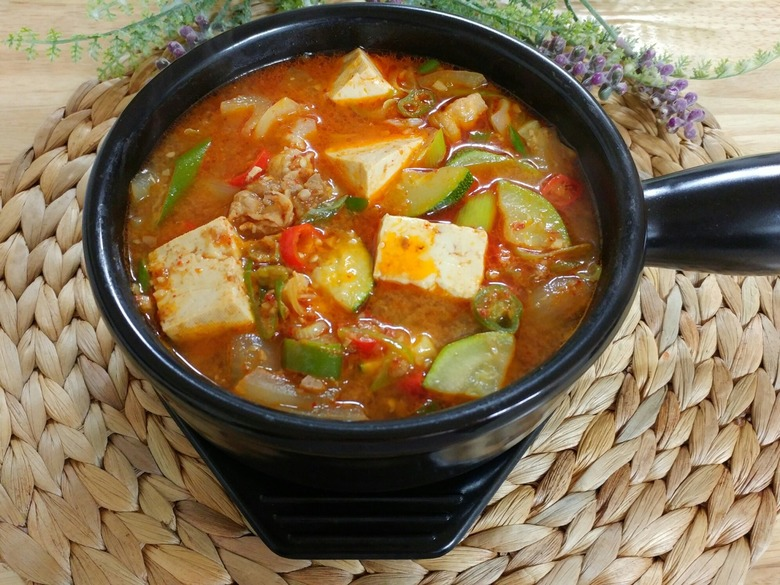

What is it?

Place your cursor over the writing to make it bigger!
This thick, fragrant stew (doenjang jjigae) is a Korean comfort food especially popular in the cold winter
months. Korean bean paste (daenjang) is similar to Japanese miso but is much more pungent and powerful.
Daenjang chigae is wonderfully hearty and can be made with almost any vegetables you have on hand. Although
this is one dish where we prefer the more common zucchini, potato, and pepper combination of vegetables, it
is delicious with carrots, other squashes, and turnips as well.